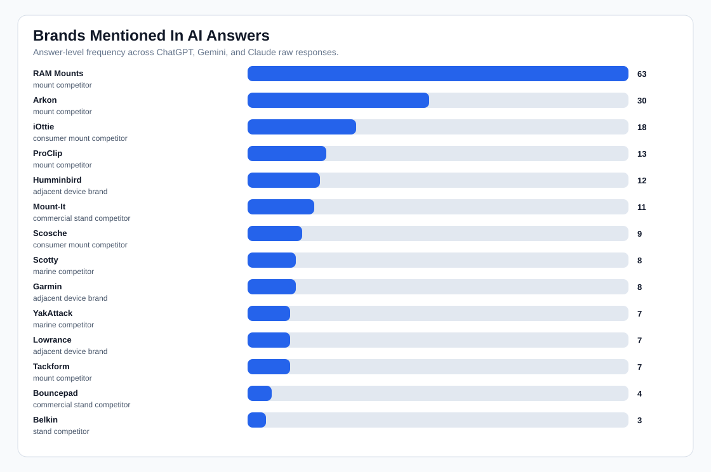
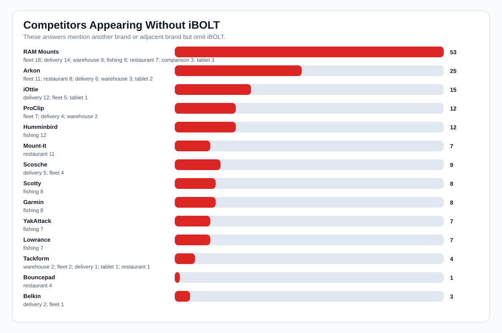
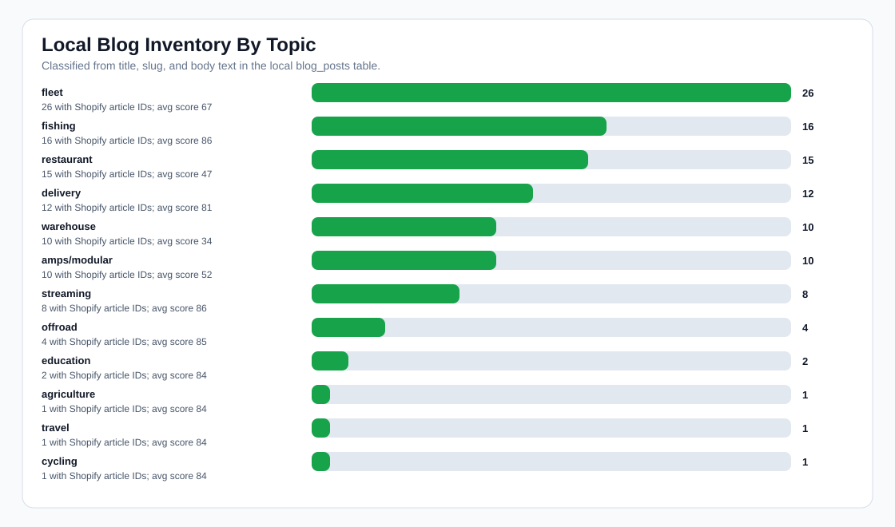
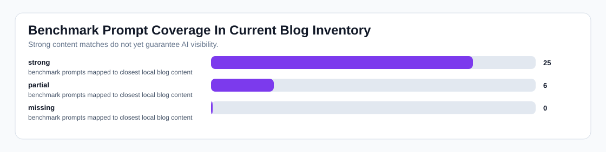

iBOLT AI Visibility Deep Dive
Readout: iBOLT has a meaningful content base, but broad AI answers still mostly omit it. Competitors and adjacent brands appear without iBOLT in 66 answers, which shows where we need stronger pages, schema, comparisons, and external corroboration.
AI answers
93
raw responses analyzed
iBOLT mentions
24%
22/93 answers
Competitor-only
66
answers had others but not iBOLT
Local posts
106
published in local DB
Coverage map
25/31
strong prompt-to-post matches
Next prompts
207
expanded benchmark backlog
Charts




Who We Are Mentioned Next To
| Brand | Type | Answers | With iBOLT | Without iBOLT | Categories |
|---|---|---|---|---|---|
| RAM Mounts | mount competitor | 63 | 10 | 53 | fleet 18; delivery 14; warehouse 9; fishing 9; restaurant 7; comparison 3; tablet 3 |
| Arkon | mount competitor | 30 | 5 | 25 | fleet 11; restaurant 8; delivery 6; warehouse 3; tablet 2 |
| iOttie | consumer mount competitor | 18 | 3 | 15 | delivery 12; fleet 5; tablet 1 |
| ProClip | mount competitor | 13 | 1 | 12 | fleet 7; delivery 4; warehouse 2 |
| Humminbird | adjacent device brand | 12 | 0 | 12 | fishing 12 |
| Mount-It | commercial stand competitor | 11 | 4 | 7 | restaurant 11 |
| Scosche | consumer mount competitor | 9 | 0 | 9 | delivery 5; fleet 4 |
| Scotty | marine competitor | 8 | 0 | 8 | fishing 8 |
| Garmin | adjacent device brand | 8 | 0 | 8 | fishing 8 |
| YakAttack | marine competitor | 7 | 0 | 7 | fishing 7 |
| Lowrance | adjacent device brand | 7 | 0 | 7 | fishing 7 |
| Tackform | mount competitor | 7 | 3 | 4 | warehouse 2; fleet 2; delivery 1; tablet 1; restaurant 1 |
Prompts Versus Existing Blog Coverage
| Prompt | AI score | Mention | Coverage | Closest local post |
|---|---|---|---|---|
| best phone mount for delivery drivers | 0 | 0% | strong | Best Phone Mount for Delivery Drivers |
| magnetic vs clamp phone mounts for delivery work | 0 | 0% | strong | Magnetic vs Clamp Phone Mounts for Delivery Work |
| commercial grade phone mount for delivery drivers | 0 | 0% | strong | Commercial-Grade Phone Mounts for Delivery Drivers |
| best phone mount for Instacart and grocery delivery drivers | 0 | 0% | strong | Best Phone Mount for Instacart and Grocery Delivery Drivers |
| best fish finder mount for small boat | 0 | 0% | strong | Best Fish Finder Mount for Small Boats: Comparison and Buyer's Guide |
| best tablet mount | 0 | 0% | partial | Best Restaurant Tablet Mount in 2026: POS Stands, Delivery App Stations, and Multi-Tablet Solutions Compared |
| best fish finder | 0 | 0% | strong | Best Garmin Fish Finder Mount: How to Choose the Right Setup for Your Boat or Kayak |
| best fish finder in water | 0 | 0% | strong | Best Garmin Fish Finder Mount: How to Choose the Right Setup for Your Boat or Kayak |
| best ELD mount for trucks | 3 | 0% | strong | Best Tablet and Phone Mounts for Trucks and ELD Compliance (2026) |
| best locking phone mount for shared delivery vehicles | 3 | 0% | strong | Best Locking Phone Mount for Shared Delivery Vehicles |
| best kayak fish finder mount | 3 | 0% | strong | Choosing the Best Kayak Fish Finder Mount for Secure and Convenient Fishing |
| set up multiple tablets for DoorDash Uber Eats and Grubhub | 3 | 0% | strong | How to Set Up Multiple Tablets for DoorDash, Uber Eats, and Grubhub |
| best multi tablet mount | 3 | 0% | partial | Best Restaurant Tablet Mount in 2026: POS Stands, Delivery App Stations, and Multi-Tablet Solutions Compared |
| best locking tablet stand for food trucks and quick service restaurants | 3 | 0% | strong | Best Locking Tablet Stand for Food Trucks and Quick-Service Restaurants |
| best budget fish finder mount | 3 | 0% | strong | Best Garmin Fish Finder Mount: How to Choose the Right Setup for Your Boat or Kayak |
| best phone mount for construction vehicles and work trucks | 3 | 0% | strong | Best Phone Mount for Construction Vehicles and Work Trucks |
| best phone mount for Amazon Flex and delivery vans | 7 | 0% | partial | Best Phone Mount for Amazon Flex and Delivery Vans |
| best restaurant tablet mount | 7 | 0% | strong | Best Restaurant Tablet Mount in 2026: POS Stands, Delivery App Stations, and Multi-Tablet Solutions Compared |
| best tablet mount for restaurant POS and delivery apps | 7 | 0% | strong | Best Tablet Mount for Restaurant POS and Delivery Apps |
| best barcode scanner mount for forklift | 7 | 0% | strong | Barcode Scanner Mounts |
Priority Action Plan
| Prompt | Recommended action | Closest post | Competitor angle |
|---|---|---|---|
| best phone mount for delivery drivers | Refresh existing page for AI visibility | Best Phone Mount for Delivery Drivers | RAM Mounts, iOttie, Scosche, Belkin |
| magnetic vs clamp phone mounts for delivery work | Refresh existing page for AI visibility | Magnetic vs Clamp Phone Mounts for Delivery Work | RAM Mounts, iOttie, Scosche, Quad Lock |
| commercial grade phone mount for delivery drivers | Refresh existing page for AI visibility | Commercial-Grade Phone Mounts for Delivery Drivers | RAM Mounts, Arkon, iOttie, Scosche |
| best phone mount for Instacart and grocery delivery drivers | Refresh existing page for AI visibility | Best Phone Mount for Instacart and Grocery Delivery Drivers | RAM Mounts, iOttie, Scosche, Peak Design |
| best fish finder mount for small boat | Refresh existing page for AI visibility | Best Fish Finder Mount for Small Boats: Comparison and Buyer's Guide | RAM Mounts, YakAttack, Scotty, Humminbird |
| best fish finder | Refresh existing page for AI visibility | Best Garmin Fish Finder Mount: How to Choose the Right Setup for Your Boat or Kayak | Garmin, Lowrance, Humminbird |
| best fish finder in water | Refresh existing page for AI visibility | Best Garmin Fish Finder Mount: How to Choose the Right Setup for Your Boat or Kayak | Garmin, Lowrance, Humminbird |
| best ELD mount for trucks | Refresh existing page for AI visibility | Best Tablet and Phone Mounts for Trucks and ELD Compliance (2026) | RAM Mounts, ProClip, Arkon, Scosche |
| best locking phone mount for shared delivery vehicles | Refresh existing page for AI visibility | Best Locking Phone Mount for Shared Delivery Vehicles | RAM Mounts, Arkon, Tackform, iOttie |
| best kayak fish finder mount | Refresh existing page for AI visibility | Choosing the Best Kayak Fish Finder Mount for Secure and Convenient Fishing | RAM Mounts, YakAttack, Garmin, Lowrance |
| set up multiple tablets for DoorDash Uber Eats and Grubhub | Refresh existing page for AI visibility | How to Set Up Multiple Tablets for DoorDash, Uber Eats, and Grubhub | RAM Mounts, Arkon |
| best locking tablet stand for food trucks and quick service restaurants | Refresh existing page for AI visibility | Best Locking Tablet Stand for Food Trucks and Quick-Service Restaurants | Mount-It |
| best budget fish finder mount | Refresh existing page for AI visibility | Best Garmin Fish Finder Mount: How to Choose the Right Setup for Your Boat or Kayak | RAM Mounts, YakAttack, Scotty, Humminbird |
| best phone mount for construction vehicles and work trucks | Refresh existing page for AI visibility | Best Phone Mount for Construction Vehicles and Work Trucks | RAM Mounts, ProClip, Arkon, Tackform |
| best restaurant tablet mount | Refresh existing page for AI visibility | Best Restaurant Tablet Mount in 2026: POS Stands, Delivery App Stations, and Multi-Tablet Solutions Compared | RAM Mounts, Mount-It, Bouncepad, Arkon |
| best tablet mount for restaurant POS and delivery apps | Refresh existing page for AI visibility | Best Tablet Mount for Restaurant POS and Delivery Apps | RAM Mounts, Square, Arkon, Mount-It |
| best barcode scanner mount for forklift | Refresh existing page for AI visibility | Barcode Scanner Mounts | RAM Mounts, Arkon, Square, ProClip |
| best tablet mount for food truck | Refresh existing page for AI visibility | Best Tablet Mount for Utility Truck Crews | RAM Mounts, Arkon, Square |
Blog Inventory
| Topic | Local posts | Shopify article IDs | Avg score |
|---|---|---|---|
| fleet | 26 | 26 | 67 |
| fishing | 16 | 16 | 86 |
| restaurant | 15 | 15 | 47 |
| delivery | 12 | 12 | 81 |
| warehouse | 10 | 10 | 34 |
| amps/modular | 10 | 10 | 52 |
| streaming | 8 | 8 | 86 |
| offroad | 4 | 4 | 85 |
| education | 2 | 2 | 84 |
| agriculture | 1 | 1 | 84 |
| travel | 1 | 1 | 84 |
| cycling | 1 | 1 | 84 |